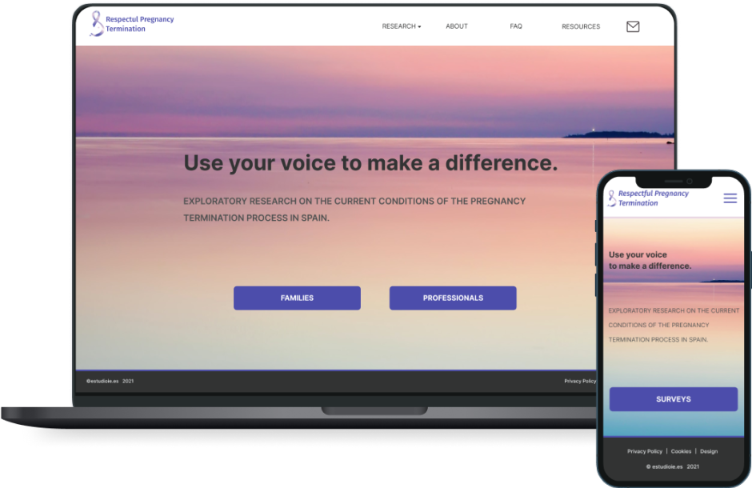
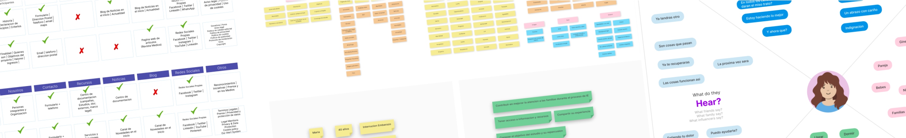
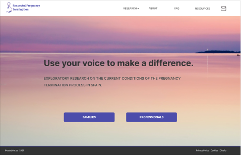
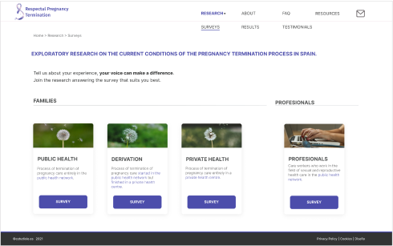
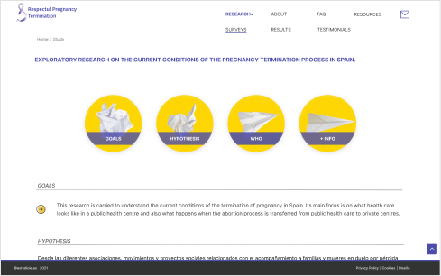
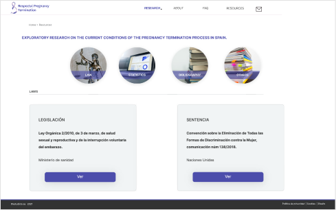
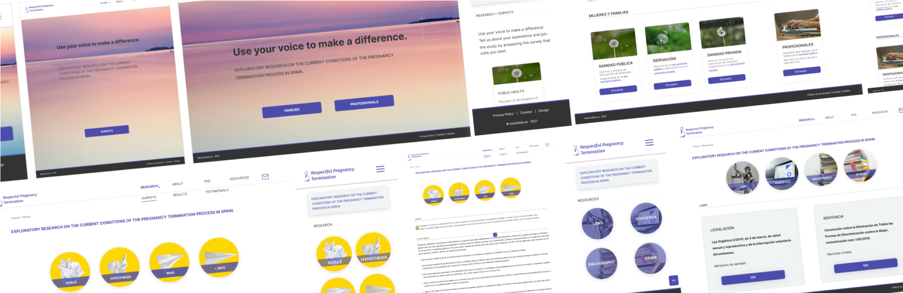
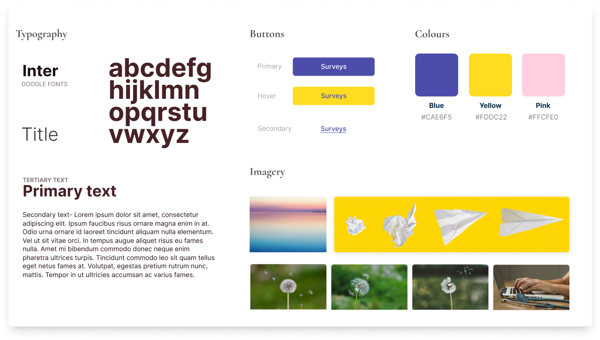
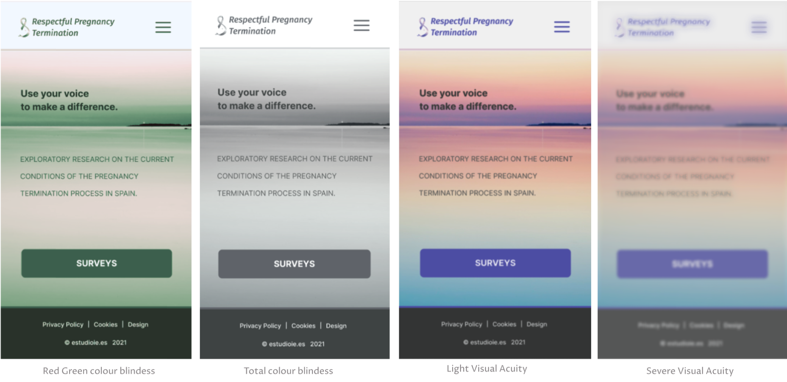
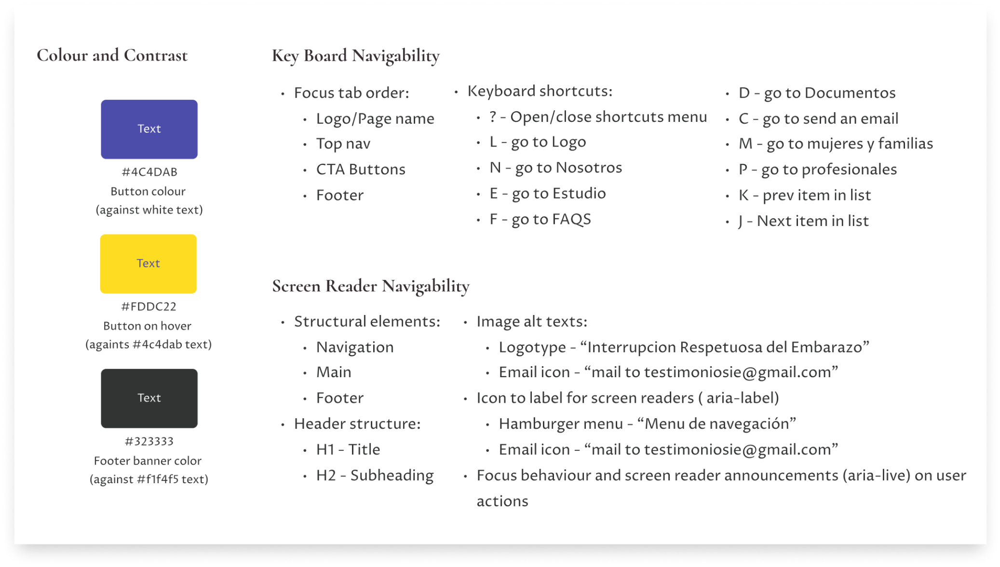

PT Research
Responsive website design
UX design • UI design •
Front-end
Responsive Website
Front-end
Responsive Website
Responsive design of a website for a research about how women and their families have been supported by the national healthcare system when the pregnancy ends with an interruption in Spain.


Brief
Respectful Pregnancy Termination is a website that I designed and developed. The project was for a group of organisations dealing with grief from pregnancy loss in Spain. I was the only designer on this project. However, I was in constant contact with the stakeholders for guidance on the subject.
overview
The main aim of this project was to collect testimonials from women and families who are going through difficult times, specifically the loss of a pregnancy or newborn in Spain. The main goal was to create a responsive website, user-friendly to understand and navigate easily to the surveys.
GOALS
• User-friendly to understand and navigate easily to the surveys
• Clearly express the research objectives
• Transparency about how data is collected
• Clearly express the research objectives
• Transparency about how data is collected
Research and Discovery
— Competence analysis
— Interviews
— Interviews
— Empathy maps
— User persona
— User persona
— User’s journey
— Experience map
— Experience map
— User’s flow
— Web map
— Web map
To begin, I conducted thorough research on the topic of surveys and what makes the users want to participate in research like this. They helped me to understand the user’s needs and preferences for such a sensitive and emotional topic. After the discovery and definition of the project was clear that the user's needs and motivations played a crucial role in the success of the survey:
• Easy and understandable navigation
• Provide information and resources on pregnancy termination
• Make clear the goal of the research and what will happen with the results
• Easy and understandable navigation
• Provide information and resources on pregnancy termination
• Make clear the goal of the research and what will happen with the results

Design Process
To achieve the user’s needs I designed a simple and minimalist landing page that has clear actions and good navigation, with an outstanding information hierarchy.


To achieve the user’s needs I designed a simple and minimalist landing page that has clear actions and good navigation, with an outstanding information hierarchy.
To ensure a smooth user experience, the surveys page has a clear and concise layout that guides users through the process of submitting their testimonial. The organisation decided to use google forms to edit the surveys so I didn’t have the opportunity to design a custom form, but I ensured that the link to the surveys page was easy to locate and user-friendly.
Additionally, the page design includes an FAQ section and a contact form to help users with any questions or concerns they may have.
To ensure a smooth user experience, the surveys page has a clear and concise layout that guides users through the process of submitting their testimonial. The organisation decided to use google forms to edit the surveys so I didn’t have the opportunity to design a custom form, but I ensured that the link to the surveys page was easy to locate and user-friendly.
Additionally, the page design includes an FAQ section and a contact form to help users with any questions or concerns they may have.


“
Because the sensitivity of the topic the visuals had to convey the feeling and purpose that the stakeholders required for this project: sadness and hope.
"
Responsiveness
Because the website is intended to be used by a wide range of users across multiple devices, designing responsively was an essential aspect of the project. The website was designed to be fully responsive, ensuring that the user experience remains consistent through its breaking points and components like size, layout, alignment, margins and padding to fit the different devices users may be using.

Style guide
To ensure consistency throughout the website, a style guide was created that outlines color palettes, typography, and other design elements to be used across all pages.

accessibility
Accessibility was also an important consideration in the design process. The website was designed to be compliant with Web Content Accessibility Guidelines (WCAG), ensuring that all users, regardless of any disabilities they may have, can access and use the website.


What I learned
From this project, I learned that designing for multiple audiences can be a challenging yet rewarding experience. It highlights the importance of understanding user needs and conducting research to create a design that works for everyone. Furthermore, incorporating feedback from users throughout the design process is crucial to ensure that their needs are being met.
The focus on user experience design principles, including clear navigation and accessibility guidelines, was a particularly valuable aspect of developing the website. Overall, the design process prioritized user needs and accessibility to create a website that is both aesthetically pleasing and functional for all users. Designing a website for a sensitive topic such as pregnancy loss or interruption requires empathy and careful consideration of the emotional state of its users.
Check Other Projects


Would you like to work together?
Contact me